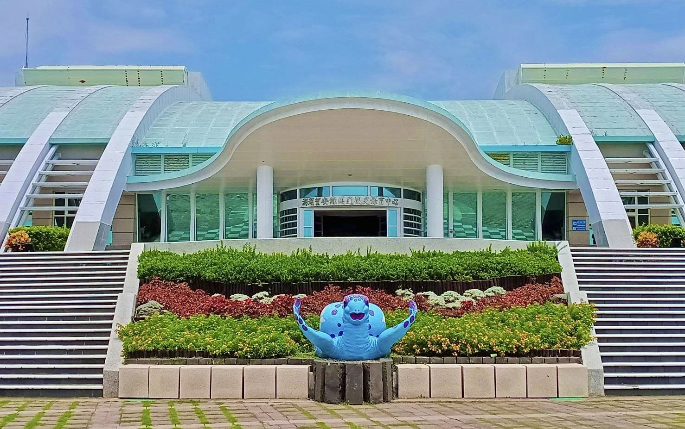
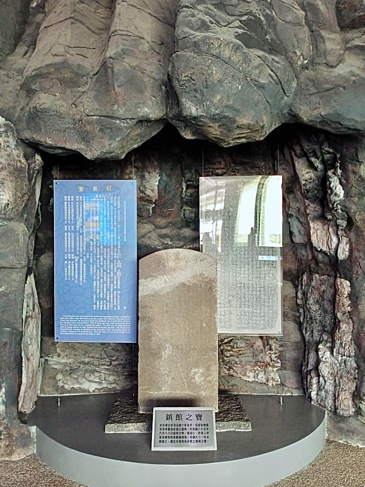
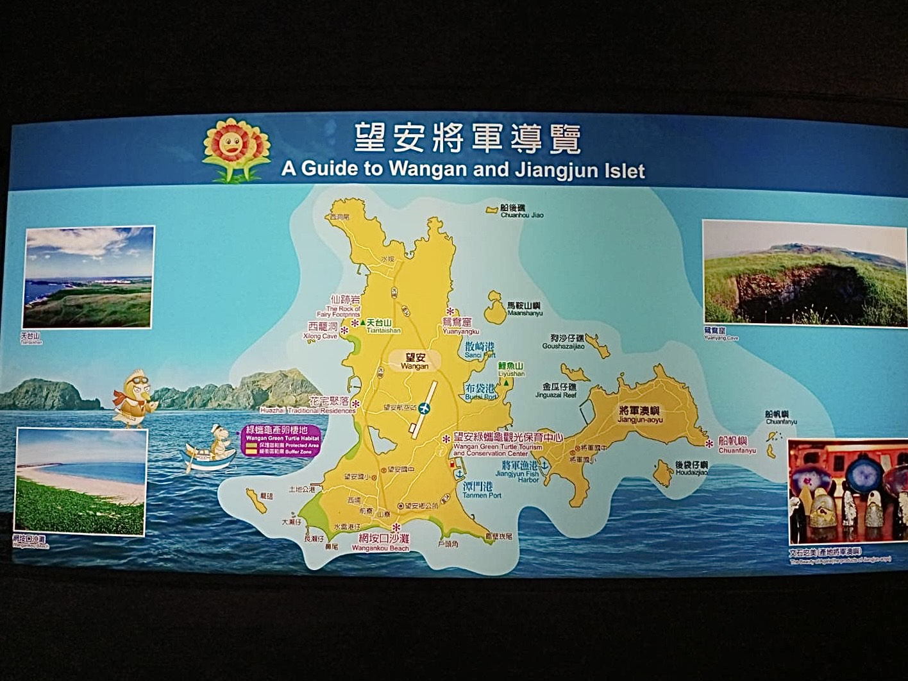
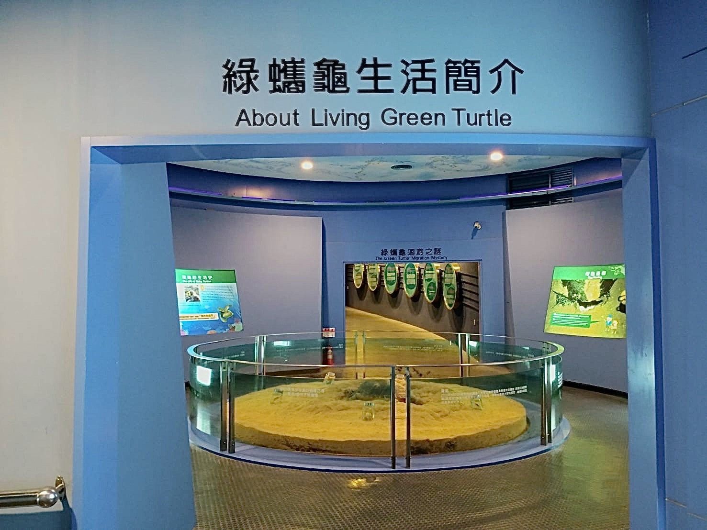
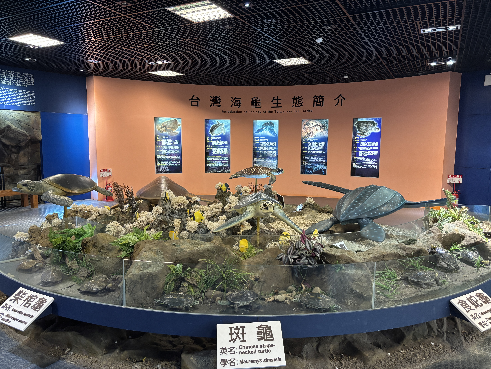

澎湖縣望安島擁有得天獨厚的地理位置與潔白純淨的沙灘，長久以來一直是綠蠵龜在台灣最重要的繁衍聖地。為了守護這些瀕臨絕種的海洋生物，政府於 1995 年正式依據《野生動物保育法》將望安島西側與南側的六處沙灘公告為「綠蠵龜產卵棲地保護區」。隨後，澎湖國家風景區管理處成立了本保育中心，旨在結合觀光、研究與保育，讓這片土地成為推廣海洋生態教育的核心。中心不僅負責傷病龜的收容與救助，更透過精確的數據監測，協助科學家深入研究海龜的生活習性與族群動態，確保這一古老物種能永續生存。

本館的鎮館之寶「好善堂石碑」，見證了望安居民早在 140 多年前便具備超前的生態平衡觀念。這座立於清光緒六年的石碑，詳實記載了當地士紳有感於民風愚蒙、不忍見耕牛勞累至死或海龜遭殘害，因此集資成立「好善堂」。碑文中嚴正申明禁止屠殺龜鼈與遺棄女嬰，並明定救助金制度，例如「龜鼈大的定價每觔一十文」進行補貼。此碑原立於望安郵局圍牆，現已遷入館內永久保存。它不僅是一件文物，更是望安人慈悲心懷與保護自然約定的永恆象徵，讓國際遊客體會到台灣深厚的人文保育底蘊。

望安島不僅是海龜的家，更擁有豐富的地理景觀與文化資產。著名的「望安三寶」包含：世界級的綠蠵龜產卵棲地、紋路絢麗獨一無二的「文石」，以及具備三百年歷史、以咾咕石建造的「花宅聚落」。島上自然資源極其豐富，鄰近的貓嶼更是海鳥的天堂，每年夏季吸引以玄燕鷗、白眉燕鷗為首的數萬隻候鳥在此繁殖。這種獨特的陸地建築美學與海洋生態多樣性的結合，使得望安成為國際遊客慢活旅遊的首選，展現出澎湖群島最純粹的生命力與原始美感。

母龜上岸產卵是一場極其艱辛的生命馬拉松。牠們必須在數十年的海洋漂流後，精確導航回到出生地，避開燈光與人為干擾，在靜謐的夜間挖掘深達一公尺的產卵窩。一窟產卵窩內通常有 100 多顆蛋，是族群繁衍的希望。然而，目前全球正面臨嚴峻的挑戰：氣候暖化導致沙灘溫度升高，由於海龜性別由胚胎發育時的溫度決定（高溫傾向產生雌性），導致公龜比例急遽下降，受精率不足正嚴重威脅族群存續。今年三月底，望安已發現最早的產卵紀錄，雖然令人興奮，但也提醒我們生態環境正因氣候變遷而產生巨變。

全球現存的海龜僅有七種，而台灣周邊海域便能見到其中的五種：綠蠵龜、赤蠵龜、欖蠵龜、玳瑁與革龜。其中以綠蠵龜在望安島的產卵最為著名。這些海洋舞者在海洋生態系中扮演關鍵角色，如玳瑁能維護珊瑚礁健康，綠蠵龜則是重要的「海草修剪師」。我們誠摯邀請您在走訪望安港口或岸邊時，保持安靜與耐心，運氣好時能捕捉到海龜浮出水面換氣、噴出水花的瞬間。讓我們共同實踐減塑生活，減少海洋垃圾對海龜的傷害，讓牠們能世代在澎湖這片海域永續平安地繁衍下去。
Located on the pristine shores of Wangan Island, this sanctuary was officially established in 1995 under the Wildlife Conservation Act. For centuries, the white sandy beaches on the west and south sides of the island have served as the most critical nesting grounds for Green Sea Turtles in Taiwan. The Conservation Center was built not only to offer a temporary home for injured turtles but also to bridge the gap between human tourism and ecological preservation. Through advanced data collection and community engagement, the center helps scientists understand the complex migratory patterns and reproductive cycles of these ancient mariners, ensuring that the fragile balance of the marine ecosystem is maintained for future generations.
Our museum’s most treasured artifact, the "Haoshan Hall Stele," dates back to 1880 during the Qing Dynasty. It serves as historical proof that the people of Wangan developed conservation ethics over 140 years ago. At that time, local leaders established "Haoshan Hall" to prevent the slaughter of farm cattle and sea turtles, as well as the abandonment of female infants. The stele clearly lists laws and subsidies for saving these lives, showing an incredible early understanding of the sanctity of life. It reminds international visitors that Wangan’s commitment to protecting the sea is not a modern trend but a deep-seated cultural value passed down through generations, making it a cornerstone of local heritage.
Wangan is famous for its "Three Treasures": the nesting grounds of Green Sea Turtles, the unique and colorful Veins Stone (Aragonite), and the 300-year-old Huazhai settlement built with traditional coral stone. Beyond the beaches, the island is a paradise for biodiversity. Nearby islands like Mao-Yu are sanctuaries for tens of thousands of seabirds, including Black-naped and Bridled Terns, which arrive every summer to nest. This harmony between traditional architecture and vibrant marine life offers visitors a glimpse into the raw beauty of the Penghu Archipelago. We encourage you to explore slowly and respect the quiet rhythm of island life.
Nesting is a grueling ordeal for mother turtles. After decades at sea, they navigate back to their exact birthplace to lay about 100 to 140 eggs per nest. They must work under the cover of night to avoid predators and human light pollution. However, Global Warming is now their greatest threat. Since the gender of hatchlings is determined by the temperature of the sand, rising temperatures are resulting in an overwhelming number of females and a severe lack of males. This gender imbalance leads to lower fertilization rates and threatens the entire population. Our record-early nesting this March is a stark reminder of how rapidly our environment is changing.
Out of the seven species of sea turtles worldwide, five can be found in the waters around Taiwan: the Green, Loggerhead, Olive Ridley, Hawksbill, and Leatherback turtles. Wangan is particularly renowned for the Green Sea Turtle, which plays a vital role in maintaining seagrass beds. As you walk along the harbor or shoreline, be patient and you might see a turtle surfacing for air—a magical moment of connection with the wild. By reducing plastic waste and supporting local conservation efforts, you help ensure that these majestic "dancers of the sea" can continue to thrive safely in the azure waters of Penghu for centuries to come.
望安島は、真っ白な砂浜と透明度の高い海に恵まれ、古くから台湾で最も重要なアオウミガメの産卵地として知られてきました。1995年、政府は「野生動物保護法」に基づき、島の西側と南側の砂浜を保護区に指定しました。この保育センターは、傷ついたウミガメの救助、生態系モニタリング、そして環境教育の拠点として設立されました。最新の科学的データに基づき、この古代から続く種を絶滅の危機から救うため、観光と保護を両立させる取り組みを続けています。カメたちの静かな眠りと繁殖を守ることは、私たちの最も重要な使命です。
当センターの至宝「好善堂石碑」は、140年以上も前から望安の人々が自然保護の精神を抱いていたことを証明しています。清朝時代の1880年、地元の賢人たちは、カメや牛が害されるのを忍びなく思い、「好善堂」という慈善団体を設立しました。この石碑には、カメの殺生を禁じ、弱い立場にある人々や動物を救済するための公的な助成制度が刻まれています。これは台湾で最も古い自然保護の公約の一つであり、望安の人々と海との深い絆を象徴しています。歴史的な慈悲の心は、現代の環境保護活動の礎となっており、訪れる人々に深い感銘を与えています。
望安島はウミガメの故郷であるだけでなく、豊かな地質景観と文化遺産を誇ります。「望安三宝」として知られるのは、世界的なアオウミガメの産卵地、世界で唯一の紋様を持つ「文石」、そして300年の歴史を持つ伝統的な石造り建築「花宅集落」です。また、近隣の猫嶼は海鳥の楽園であり、毎年夏にはクロアジサシやマミジロアジサシなどの数万羽の渡り鳥が繁殖のために飛来します。伝統建築の美しさと海洋生態系の多様性が融合した望安は、ゆっくりとした時間を楽しむスローツーリズムに最適な場所であり、澎湖諸島の原始的な魅力を今に伝えています。
母ガメの産卵は、まさに命がけのマラソンです。数十年という長い年月を海で過ごした後、正確なナビゲーションで生まれた場所に戻り、夜の静寂の中で一メートルもの深い穴を掘って100個以上の卵を産み落とします。しかし、現在、地球規模の温暖化が深刻な脅威となっています。ウミガメの性別は卵が孵化する砂の温度で決まるため（高温ではメスが生まれる）、オスのカメが激減しています。受精率の低下は種の存続を危うくしており、今年3月末に観測された記録的な早さの産卵は、気候変動による生態系の変化を私たちに警告しています。カメたちの未来を守るため、今、何ができるかを問い直す必要があります。
世界には7種類のウミガメが存在しますが、そのうち5種類（アオウミガメ、アカウミガメ、ヒメウミガメ、タイマイ、オサガメ）を台湾周辺の海で見ることができます。特に望安島はアオウミガメの産卵地として国際的にも有名です。ウミガメは海草を「剪定」し、サンゴ礁を健康に保つなど、海洋生態系で極めて重要な役割を果たしています。港や海岸を散策する際、静かに見守っていると、カメが息継ぎのために水面に顔を出す瞬間に出会えるかもしれません。プラスチックゴミを減らし、母なる海を汚さない。小さな一歩が、この美しい「海の踊り子」たちの未来を繋いでいきます。
대만 펑후현 왕안섬은 천혜의 자연환경과 깨끗한 백사장을 갖추고 있어 아주 오래전부터 푸른바다거북의 핵심 산란지로 자리매김해 왔습니다. 정부는 멸종 위기에 처한 이 해양 생물들을 보호하기 위해 1995년 '야생동물보호법'에 의거하여 왕안섬의 6개 주요 해변을 보호구역으로 공식 지정했습니다. 본 센터는 관광과 연구, 그리고 보전 활동을 결합하여 대중에게 해양 생태 교육의 가치를 전파하기 위해 설립되었습니다. 부상당한 거북이의 구조와 치료뿐만 아니라, 정밀한 모니터링을 통해 거북이의 습성을 연구하고 개체군을 보호함으로써 인류와 대자연이 조화롭게 공생할 수 있는 미래를 만들어 가고 있습니다.
센터의 핵심 유물인 '호선당 비석'은 왕안 사람들이 이미 140여 년 전부터 생태 보전 의식을 갖추고 있었음을 보여주는 증거입니다. 청나라 광서 6년(1880년)에 세워진 이 비석에는 농사짓는 소의 무분별한 도살과 거북이를 해치는 행위를 엄격히 금지한다는 내용이 상세히 기록되어 있습니다. 당시 지역 유지들은 생명의 소중함을 일깨우기 위해 '호선당'을 설립하고, 거북이를 보호하기 위한 보조금 제도까지 마련했습니다. 이는 대만에서 가장 오래된 환경 보전 기록 중 하나로, 왕안의 정신적 유산입니다. 이 비석은 단순한 유물을 넘어, 자연과 함께 살아가고자 했던 선조들의 자비로운 마음과 약속을 오늘날 우리에게도 생생하게 전달하고 있습니다.
왕안섬은 바다거북의 고향일 뿐만 아니라, 풍부한 문화유산과 독특한 지형을 간직하고 있습니다. 왕안의 3대 보물로 불리는 것은 세계적인 푸른바다거북 산란지, 신비로운 문양을 지닌 '문석(아라고나이트)', 그리고 300년 역사를 자랑하는 전통 산호석 건축물인 '화자이 마을'입니다. 섬 주변의 생태계도 매우 풍부하여 인근 마오위 섬은 수만 마리의 바다새들이 찾는 낙원입니다. 매년 여름이면 검은등제비갈매기 등이 이곳을 찾아와 번식을 합니다. 전통 건축의 아름다움과 해양 생태계의 다양성이 어우러진 왕안은 바쁜 현대인들에게 진정한 '슬로 시티'의 매력을 선사하며 펑후 열도의 원시적인 생명력을 그대로 간직하고 있습니다.
어미 거북이의 산란은 수만 킬로미터의 여정을 견뎌낸 후 고향으로 돌아오는 숭고한 생명의 드라마입니다. 어미는 인위적인 조명과 소음을 피해 고요한 밤에 해변으로 올라와 깊은 산란굴을 파고 100여 개의 알을 낳습니다. 그러나 현재 지구 온난화라는 심각한 위협에 직면해 있습니다. 거북이의 성별은 부화 당시의 모래 온도에 의해 결정되는데(고온일수록 암컷), 최근 온도가 지속적으로 상승하면서 수컷 거북이가 급격히 줄어들고 있습니다. 이는 수정률 저하와 개체수 감소로 이어져 종의 생존을 어렵게 만들고 있습니다. 올해 3월 말에 발견된 이례적인 조기 산란 기록은 기후 변화가 거북이들의 생체 리듬에 큰 변화를 주고 있음을 경고하고 있습니다.
전 세계에는 단 7종의 바다거북이 존재하며, 그중 5종(푸른바다거북, 붉은바다거북, 올리브각시바다거북, 매부리바다거북, 장수거북)을 대만 인근 해역에서 만날 수 있습니다. 바다거북은 해초 군락을 관리하고 산호초의 건강을 유지하는 등 해양 생태계에서 매우 중요한 역할을 수행합니다. 왕안 항구나 해변을 산책할 때 조금만 주의를 기울이면, 거북이가 숨을 쉬기 위해 수면 위로 머리를 내미는 마법 같은 순간을 만날 수도 있습니다. 우리가 일상에서 플라스틱 사용을 줄이는 작은 노력이 이 아름다운 '바다의 무용수'들이 대대손손 펑후의 푸른 바다에서 안전하게 살아갈 수 있는 터전을 지켜주는 길입니다.